-
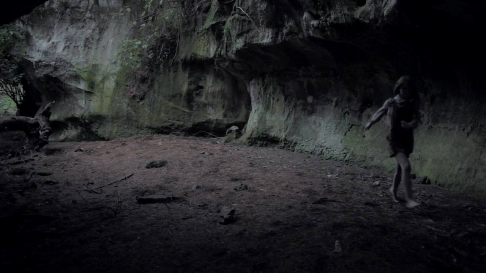


-
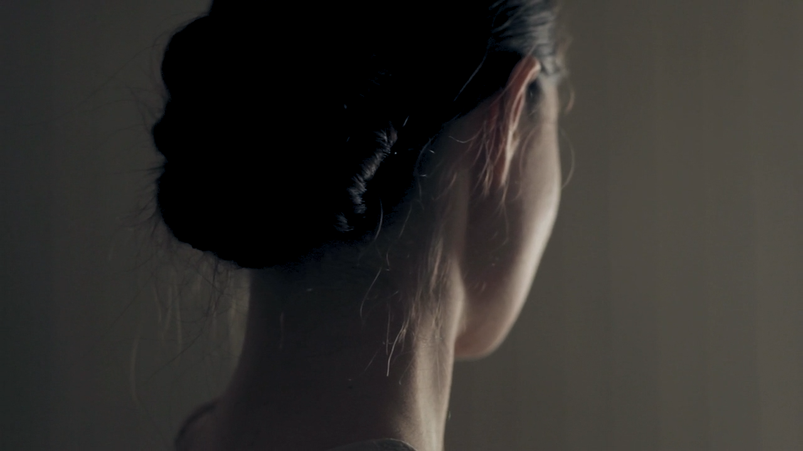


artist/heading?
Video Title
Sophie Rzepecky's Textile Design Major Project 2011 for Massey University.
From Sophie: "This film explores an idea
that came out of the artists personal
feelings surrounding light and darkness.
By cocooning the wearer with a cover
of soft mohair and stretch cotton, the
textile diffuses the form of the
wearer, covering the mouth and nose only
allowing the eyes to be seen over the
top. The textile becomes a mechanism of
protection, of safety in a dark space."Directed by Sophie Rzepecky & Bryson Rooney
Shot by Bryson Rooney
Music by Glass Vaults
Starring Monica Buchan-Ng -
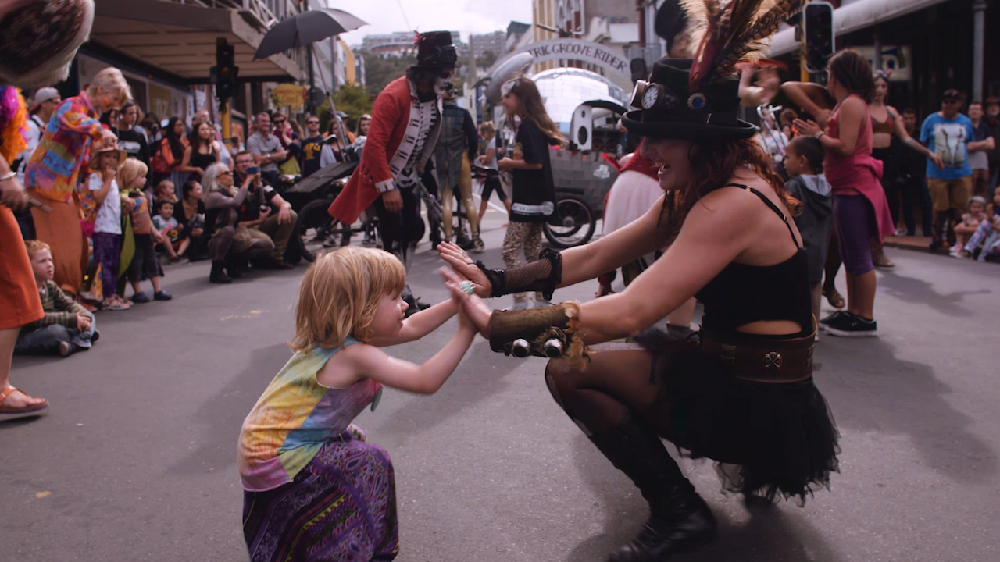

 Wellington City Council, a regular client of
Wellington City Council, a regular client of
Stem Creative, wanted to document the return
of Cuba Street Carnival in 2015. I was
there for two full-on days of continuous
shooting, which then had to be cut down into a
very short video. Luckily the festival was
full of colour, laughter, amazing food,
and music.Bryson Rooney- Director, DOP
Ben Forman- Producer, Editor
Aaron Alexander- Producer
Camera- Sony FS7, Panasonic GH4, BlackMagic 4K -
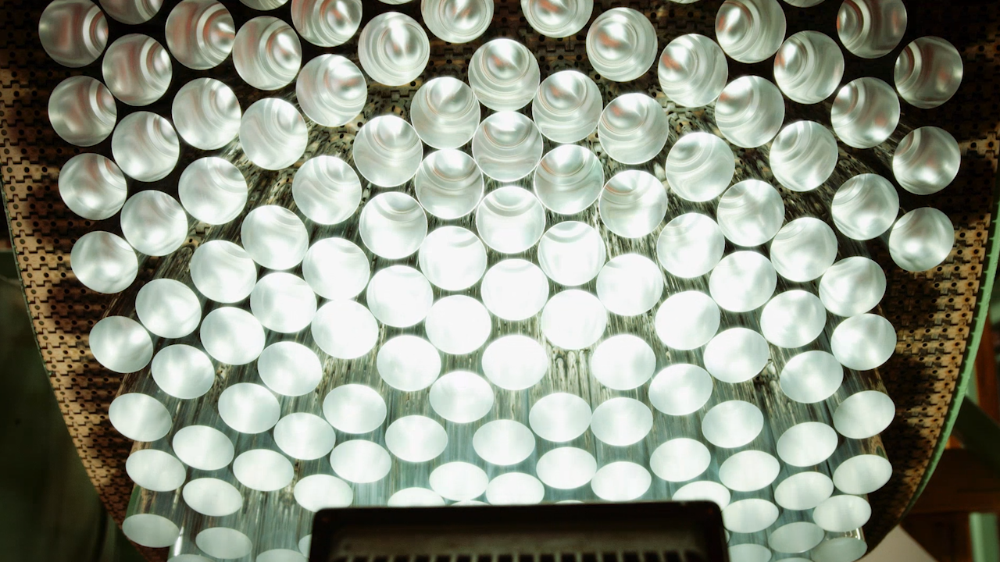
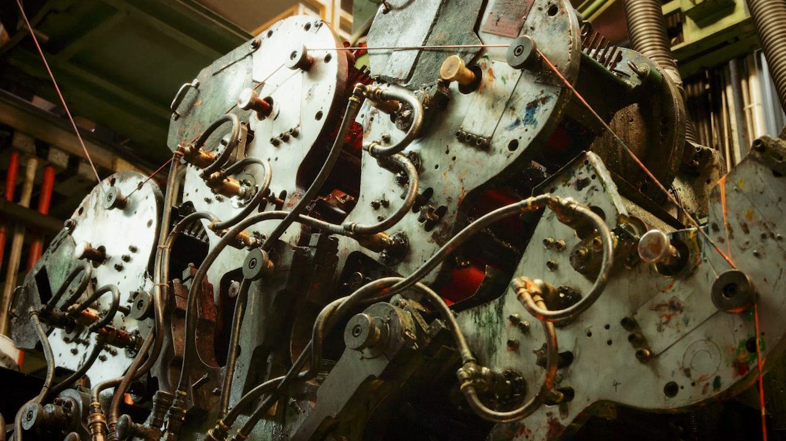 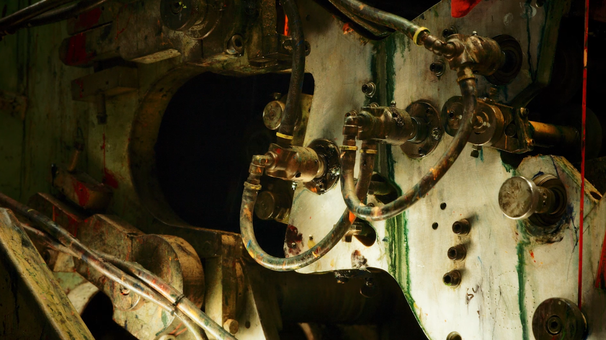The initial idea was simple- document how
Garage Projects cans are made at a
factory in Auckland, New Zealand. Hops on
Pointe was originally brewed for the
Royal New Zealand Ballet, an elegant
champagne pilsner. It quickly became clear
that putting the machine's work to
classical music was absolutely necessary.
The original youtube video has 74,000+
views and was featured on several
prominent food websites.Bryson Rooney- Director, DOP, Editor
Jos Ruffel- Producer
Camera- BlackMagic 4k -


 As the in-house videographer for Garage
As the in-house videographer for Garage
Project, I always grateful the head brewer
Pete is incredibly charming on camera, a total
natural. When I heard I was going to film
them brewing in Wellington Zoo, I knew the
footage would be hilarious. A very fun day..Bryson Rooney- Director, DOP, Editor, Colourist
Jos Ruffel- Producer -
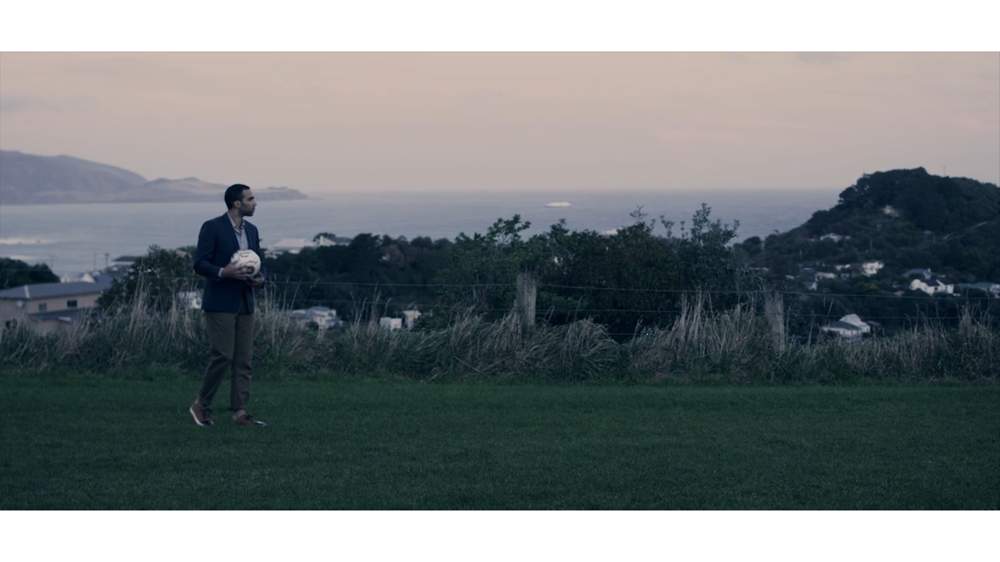

 This is the second collaboration between
This is the second collaboration between
Rembrandt and myself. They wanted a video
showing off their new jacket, almost a blank
brief. Luckily at around the same time
Wellington Phoenix player Paul Iffel was set
to return to the team after a serious
injury. Since Rembrandt sponsors the Phoenix,
they had the idea to interview Paul about
his career, his clothes, and life. Paul was
a true class act on set, and helped us
show off this new jacket in a way only he
could.Bryson Rooney- Director, Editor
Ben Forman- DOP, Colourist
Jonathon Hall- Producer
Camera- Red Epic -
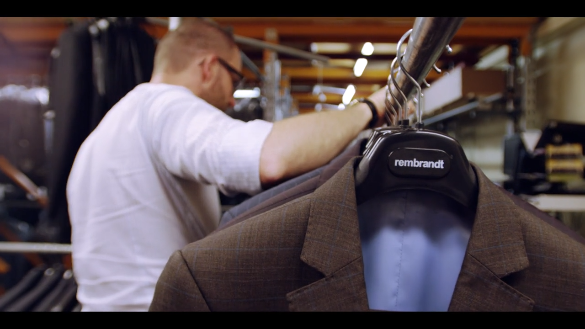
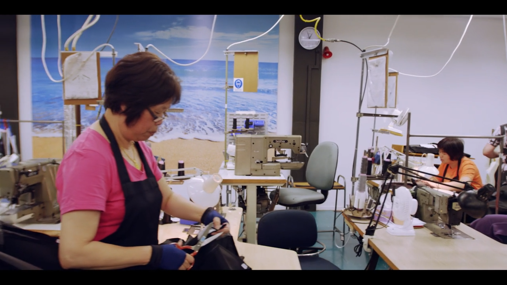
 Rembrandt first approached us at Stem
Rembrandt first approached us at Stem
Creative to make a video about their
bespoke suit factory in Wellington. I have
always been passionate about people
making products locally with pride, and
wanted to show respect to the talented folk
at Rembrandt. The end result was
described to me as 'the most emotion I've
ever felt about a suit.'Bryson Rooney- Director, DOP, Editor, Colourist
Jess Charlton- 1st AC, Focus Puller, Camera Operator
Ben Forman- Producer
Jonathon Hall- Producer
Camera- Red Epic, Zeiss Primes -
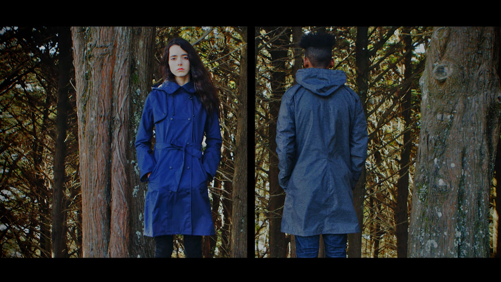
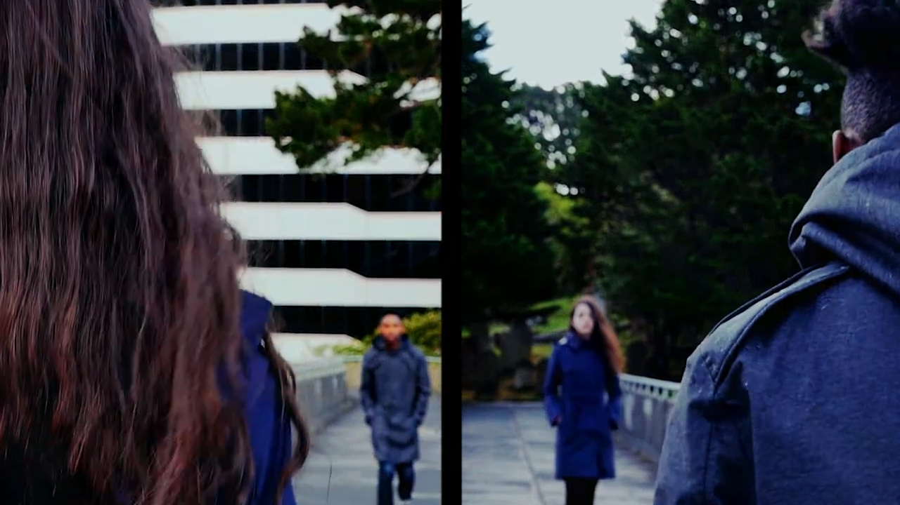
 Okewa approached us after seeing the success of
Okewa approached us after seeing the success of
our Wool Runners kickstart video. Nothing
happened at the time, but eventually we were
able to collaborate on a short fashion film
featuring their signature jackets.Bryson Rooney- Director, DOP, Editor, Colourist
Nick & Nevada Leckie- Producers
Camera- Panasonic GH4 on Ronin steadicam -


 We were approached at Stem by brothers Tim &
We were approached at Stem by brothers Tim &
Paul Brown who were launching a
kickstarter project for a new shoe concept,
and need an awesome video for the page.
I went out to their farm and filmed
lots of footage, the brothers were very
passionate about their product and I think
that shows. The kickstarter page raised
a staggering $118,000 in just 10 days
and is a really great success story.Bryson Rooney- Director, DOP, Editor
Ben Forman- Producer
Tim & Paul Brown- Producer
Camera- Canon 5D MKIII